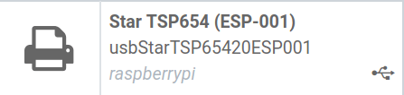

Conectar una impresora¶
La instalación de una impresora se puede hacer en unos cuantos pasos muy fáciles. La impresora se puede usar para imprimir recibos, etiquetas, órdenes o incluso reportes de diferentes aplicaciones de Odoo. Además, puede asignar las acciones de una impresora como acciones en un activador durante los procesos de fabricación, o agregarlas a un punto de control o revisión de calidad.
Conexión¶
La Caja IoT es compatible con impresoras que se conectan a través de un puerto USB, una red inalámbrica o Bluetooth. Las impresoras compatibles se detectan automáticamente y aparecen en la lista de Dispositivos de la aplicación IoT.
Nota
Es posible que la impresora tarde un par de minutos en aparecer en la lista de dispositivos en la aplicación IoT.
Vincular una impresora¶
Vincular una impresora a las órdenes de trabajo¶
Puede vincular órdenes de trabajo a las impresoras a través de un punto de control de calidad para imprimir las etiquetas de los productos fabricados.
En la aplicación Calidad, puede configurar un dispositivo en un punto de control de calidad. Para hacerlo, vaya a la aplicación , y abra el punto de control deseado al que estará vinculada la impresora.
Importante
Debe adjuntar una Operación de fabricación y una Operación de una orden de trabajo a un punto de control de calidad antes de que el campo Tipo le muestre disponible la opción Imprimir etiqueta.
Luego, edite el punto de control seleccionando el campo Tipo y haciendo clic en Imprimir etiqueta en el menú desplegable de opciones. Al hacerlo, aparecerá un campo llamado Dispositivo, donde podrá seleccionar el dispositivo que adjunto. Guarde los cambios.

Ahora podrá usar la impresora con el punto de control de calidad seleccionado. Cuando el proceso de fabricación llegue al punto de control de calidad, la base de datos le mostrará la opción de imprimir las etiquetas para un producto en específico.

Truco
También puede acceder a los puntos de control de calidad en la aplicación , y seleccionar el dispositivo. Hay una pestaña de Puntos de control de calidad donde se pueden agregar con el dispositivo.
Nota
En un formulario detallado de una revisión de calidad, el Tipo de revisión se puede especifica en Imprimir etiqueta. Para crear nuevas revisiones de calidad, vaya a la aplicación .
Ver también
Vincule una impresora a un centro de trabajo en la aplicación Fabricación¶
Para vincular una impresora a una acción, primero necesita configurarla en un centro de trabajo. Vaya a la aplicación . Luego, seleccione el centro de trabajo que desee en donde se usará la impresora. Agregue el dispositivo a la pestaña de Activadores de IoT en la columna de Dispositivo haciendo clic en Agregar una línea.
Puede vincular la impresora a una de las siguientes opciones que aparecen en el menú desplegable de Acciones: Imprimir etiquetas, Imprimir operación, o Imprimir recibo de envío. También puede agregar una clave para activar la acción.
Importante
Tenga en cuenta que se elije el primer activador en la lista. El orden de los activadores es importantes y puede arrastrarlos en el orden que desee.
Nota
En la pantalla de Orden de trabajo, un estado gráfico indica si la base de datos está conectada de forma adecuada a la impresora.
Ver también
Vincular impresora a los reportes¶
También puede vincular un tipo de reporte a una impresora específica. En la aplicación IoT, vaya al menú Dispositivos y seleccione la impresora que desea configurar.
Después, haga clic en Editar, vaya a la pestaña Reportes de la impresora y haga clic en Agregar una línea. En la ventana emergente, seleccione todos los tipos de Reportes que deben estar vinculados a esta impresora.

Ahora, cada vez que seleccione Imprimir en el panel de control, en lugar de descargar un PDF, aparecerá una ventana emergente con todas las impresoras vinculadas al reporte. Luego, Odoo enviará el reporte a las impresoras seleccionadas y lo imprimirá en automático.
Ver también
Truco
También puede configurar los reportes en el Menú técnico en el modo debug. Para ello, vaya a la aplicación . Aquí podrá encontrar el reporte individual en la lista, dónde puede configurar un Dispositivo IoT en el reporte.